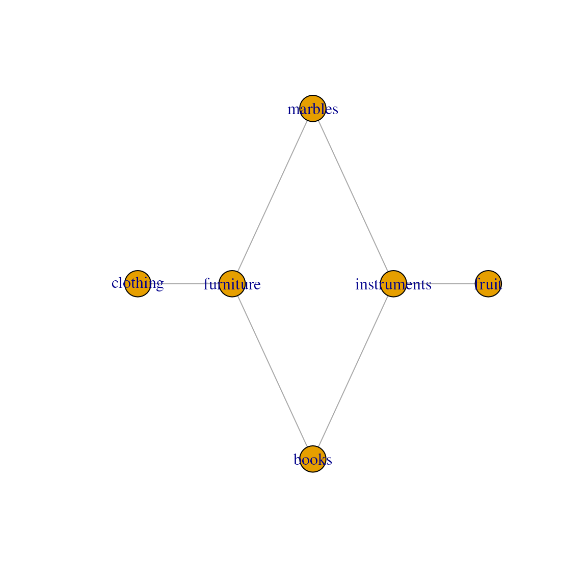
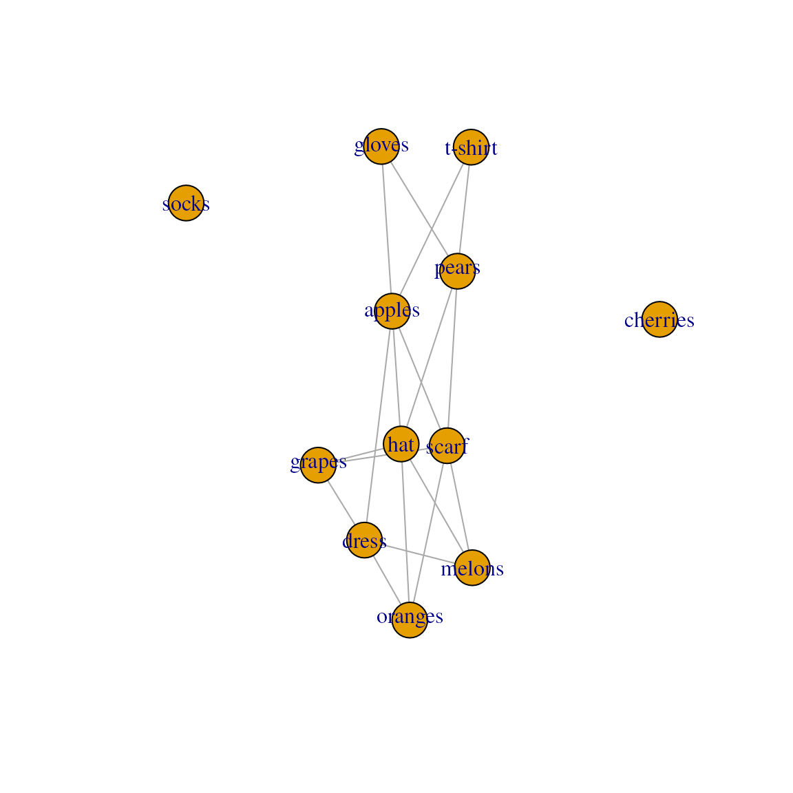
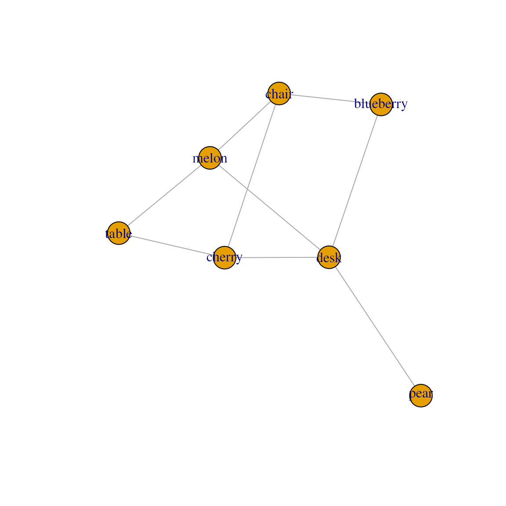

MultiFactor
MultiFactor.RmdOverview
MultiFactor aims to provide a consistent toolkit to
incorporate relational data into data-analytical tools and methods. In
practice, we expect MultiFactor to be used in combination
with additional packages that extend it. For instance, see ariadne and anansi, two such
packages that make use of MultiFactor to link and convert
across biological database IDs and perform multi-omics integration
analysis, respectively.
Get started using MultiFactor
Installation instructions
Get the latest stable R release from CRAN. Then install the released
version of MultiFactor:
install.packages("MultiFactor")Or install the development version from this repository:
install.packages("remotes")
remotes::install_github("minotau-R/MultiFactor")Setup
library(MultiFactor)
#>
#> Attaching package: 'MultiFactor'
#> The following object is masked from 'package:base':
#>
#> nlevels
library(ggplot2)
# Load demo data
set.seed(010292)
tp <- trade_posts()MultiFactor and LinkMap objects
LinkMap
The basic object in the MultiFactor package is the
LinkMap, which contains relational information across two
types of features. This format is sometimes referred to as an edge list. Under a
thin layer of S7, the LinkMap object is a
data.frame where the first two columns indicate which
feature IDs that are considered linked. Optional additional columns are
considered metadata.
Let’s use an example data set to take a closer look at
LinkMap. The trade_posts() function generates
data about fictional trade posts, where one type of good is traded for
another. In this particular case, types of furniture are traded for
types of utensils.
linkmap <- tp[[1]]
linkmap
#> furniture clothing
#> 3 desk shirt
#> 6 chest shirt
#> 9 desk trousers
#> 13 chair socks
#> 15 desk socks
#> 19 chair gloves
#> 20 table gloves
#> 33 desk scarf
#> 35 drawer scarfThe two types of goods are captured by the two columns, with column
names representing the types of good and rows representing
which specific type-pairs are traded at that trade post, or,
more generally, are linked in that LinkMap.
levels( linkmap )
#> $furniture
#> [1] "chair" "table" "desk" "bed" "drawer" "chest"
#>
#> $clothing
#> [1] "shirt" "trousers" "socks" "gloves" "hat" "scarf"Notice that LinkMap is two factor columns
in a trench coat. We can inspect the levels as usual.
We can see that we have several of these types of trade posts in our data set. However, we also notice that the column names - the types of goods - can differ.
tp[[2]]
#> instruments clothing
#> 9 drum trousers
#> 12 harp trousers
#> 15 drum socks
#> 24 harp gloves
#> 29 fiddle hat
#> 32 guitar scarf
#> 33 drum scarf
#> 34 accordion scarf
#> 36 harp scarf
tp[[3]]
#> fruit marbles
#> 3 cherry red marble
#> 5 melon red marble
#> 8 pear green marble
#> 14 pear purple marble
#> 17 melon purple marble
#> 25 apple yellow marble
#> 26 pear yellow marble
#> 33 cherry spotted marble
#> 36 blueberry spotted marbleMultiFactor
The MultiFactor is in essence a collection of
LinkMaps. Where LinkMaps contain relational
information across two data types, MultiFactors are a
representation of the relational graph formed by combining those
LinkMaps. The full object tp, which contains
the LinkMaps we just investigated, is in fact a
MultiFactor object:
tp
#> A MultiFactor::MultiFactor list S7_object,
#> 5 feature types across 5 LinkMaps.
#>
#> furniture clothing instruments fruit marbles
#> furniture2clothing 5 5 . . .
#> instruments2clothing . 5 5 . .
#> fruit2marbles . . . 5 5
#> instruments2marbles . . 5 . 6
#> clothing2marbles . 6 . . 4
#>
#> Values represent unique feature names in that LinkMap.
#>
#> Levels:
#> furniture : 6 Levels: chair ... chest
#> clothing : 6 Levels: shirt ... scarf
#> instruments : 6 Levels: trumpet ... harp
#> fruit : 6 Levels: apple ... blueberry
#> marbles : 6 Levels: red marble ... spotted marbleNotice that a MultiFactor summarizes information across
the component LinkMaps in several ways. First, The matrix
shows the types of goods as columns and the component
LinkMaps that contain this information as rows. The numbers
in the matrix then show the number of unique types of that type of good
in that particular LinkMap - and that are therefore linked
to the second feature in the LinkMap.
For instance, in the top-left corner of the matrix, we can see that
the first LinkMap links furniture and utensils and is aptly
named furniture2utensils. Notice that five unique types of
furniture as well as five types of utensils are mentioned in
furniture2utensils.
Though MultiFactor is a list of LinkMaps
under the hood, we can also interact with its matrix representation, as
well as access the component levels:
dim(tp)
#> [1] 5 5
dimnames(tp)
#> [[1]]
#> [1] "furniture2clothing" "instruments2clothing" "fruit2marbles"
#> [4] "instruments2marbles" "clothing2marbles"
#>
#> [[2]]
#> [1] "furniture" "clothing" "instruments" "fruit" "marbles"
levels(tp)
#> $furniture
#> [1] "chair" "table" "desk" "bed" "drawer" "chest"
#>
#> $clothing
#> [1] "shirt" "trousers" "socks" "gloves" "hat" "scarf"
#>
#> $instruments
#> [1] "trumpet" "guitar" "drum" "accordion" "fiddle" "harp"
#>
#> $fruit
#> [1] "apple" "pear" "cherry" "orange" "melon" "blueberry"
#>
#> $marbles
#> [1] "red marble" "green marble" "purple marble" "blue marble"
#> [5] "yellow marble" "spotted marble"
lengths(levels(tp))
#> furniture clothing instruments fruit marbles
#> 6 6 6 6 6Note that levels of the same type are automatically unified across all component LinkMaps with that type of level.
weave() a path
Going back to our trading post example, let’s say we’d want to get
some new chairs, but we only have fruit. While both fruit and furniture
are available in our data set, there aren’t any trade post that deals in
that particular pair of goods. However, we could imagine trading our
fruit for furniture in steps: We can trade our fruit for a different
good, which we trade for another one, until we reach a good that we can
trade for furniture. The weave() function does exactly
this:
fruit2furniture <- weave(tp, fruit ~ furniture)
fruit2furniture
#> fruit furniture
#> 1 cherry chair
#> 2 melon chair
#> 3 blueberry chair
#> 4 cherry table
#> 5 melon table
#> 6 pear desk
#> 7 cherry desk
#> 8 melon desk
#> 9 blueberry deskWe receive a new LinkMap containing all fruits that
could be traded for furniture.
Selecting a path
We can use select_path() to find the types of traded
goods in order, or more generally, the paths that were traversed. If
several paths exist, all will be traversed and included into one
LinkMap.
select_path(tp, fruit ~ furniture)
#> [[1]]
#> [1] "fruit" "marbles" "clothing" "furniture"Compatibility with igraph and Matrix
Convert MultiFactor and LinkMap objects to
igraph representation
MultiFactor relies heavily on the excellent igraph and Matrix
packages, particularly for path finding and sparse matrix
representation.
Convert MultiFactor main graph representation to
igraph object
library(igraph)
#>
#> Attaching package: 'igraph'
#> The following objects are masked from 'package:stats':
#>
#> decompose, spectrum
#> The following object is masked from 'package:base':
#>
#> union
# Convert to an igraph object
g <- as.igraph(tp)
g
#> IGRAPH 6bbd203 UN-- 5 5 --
#> + attr: name (v/c), name (e/c)
#> + edges from 6bbd203 (vertex names):
#> [1] furniture --clothing instruments--clothing fruit --marbles
#> [4] instruments--marbles clothing --marbles
# Plot graph across data types
plot(g)
Convert LinkMap relational information to
igraph object
# Convert to an igraph object
lg <- as.igraph(fruit2furniture)
lg
#> IGRAPH 17f1f06 UN-B 12 9 --
#> + attr: type (v/l), name (v/c)
#> + edges from 17f1f06 (vertex names):
#> [1] cherry --chair melon --chair blueberry--chair cherry --table
#> [5] melon --table pear --desk cherry --desk melon --desk
#> [9] blueberry--desk
# Same information as the LinkMap:
plot(lg)
Convert LinkMap linkage information to sparse adjacency
Matrix
# Convert to an igraph object
m <- as.matrix(fruit2furniture, dimnames = levels(fruit2furniture))
m
#> 6 x 6 sparse Matrix of class "ngCMatrix"
#> furniture
#> fruit chair table desk bed drawer chest
#> apple . . . . . .
#> pear . . | . . .
#> cherry | | | . . .
#> orange . . . . . .
#> melon | | | . . .
#> blueberry | . | . . .Utilities
MultiFactor also provides some utility functions for
data wrangling on tables with features (rows) of the appropriate
type.
# Generate small example table
furniture_table <- as.data.frame(
replicate( 10, rbinom(6, rbinom(6, 100, runif(6)), runif(6)) )
)
rownames(furniture_table) <- levels(tp)$furniture
furniture_table
#> V1 V2 V3 V4 V5 V6 V7 V8 V9 V10
#> chair 7 1 69 16 28 21 25 10 7 0
#> table 6 30 4 8 6 13 0 3 2 18
#> desk 7 16 12 2 7 16 50 5 17 37
#> bed 3 27 59 3 27 65 2 32 2 5
#> drawer 63 55 1 20 29 15 11 49 12 4
#> chest 29 4 27 57 74 2 27 54 28 20subgroup_apply
subgroup_apply allows us to run arbitrary code on
subsets of a table, based on groupings on the left hand of the
formula:
subgroup_apply(
X = furniture_table, LINK = tp, BY = fruit ~ furniture, FUN = as.data.frame
)
#> $pear
#> V1 V2 V3 V4 V5 V6 V7 V8 V9 V10
#> desk 7 16 12 2 7 16 50 5 17 37
#>
#> $cherry
#> V1 V2 V3 V4 V5 V6 V7 V8 V9 V10
#> chair 7 1 69 16 28 21 25 10 7 0
#> table 6 30 4 8 6 13 0 3 2 18
#> desk 7 16 12 2 7 16 50 5 17 37
#>
#> $melon
#> V1 V2 V3 V4 V5 V6 V7 V8 V9 V10
#> chair 7 1 69 16 28 21 25 10 7 0
#> table 6 30 4 8 6 13 0 3 2 18
#> desk 7 16 12 2 7 16 50 5 17 37
#>
#> $blueberry
#> V1 V2 V3 V4 V5 V6 V7 V8 V9 V10
#> chair 7 1 69 16 28 21 25 10 7 0
#> desk 7 16 12 2 7 16 50 5 17 37
# More complex example:
# For all subgroups of furniture corresponding to one particular food, if that
# group has more than two rows (types of furniture), fit a statistical model.
#
subgroup_apply(
furniture_table, tp, fruit ~ furniture, FUN = function(x) {
if( NROW(x) <= 2 ) return( NULL )
# else:
summary( lm(V1 ~ V2, data = x) )
}
)
#> $pear
#> NULL
#>
#> $cherry
#>
#> Call:
#> lm(formula = V1 ~ V2, data = x)
#>
#> Residuals:
#> chair table desk
#> -0.1664 -0.1783 0.3447
#>
#> Coefficients:
#> Estimate Std. Error t value Pr(>|t|)
#> (Intercept) 7.20048 0.40430 17.810 0.0357 *
#> V2 -0.03407 0.02059 -1.655 0.3460
#> ---
#> Signif. codes: 0 '***' 0.001 '**' 0.01 '*' 0.05 '.' 0.1 ' ' 1
#>
#> Residual standard error: 0.4222 on 1 degrees of freedom
#> Multiple R-squared: 0.7326, Adjusted R-squared: 0.4651
#> F-statistic: 2.739 on 1 and 1 DF, p-value: 0.346
#>
#>
#> $melon
#>
#> Call:
#> lm(formula = V1 ~ V2, data = x)
#>
#> Residuals:
#> chair table desk
#> -0.1664 -0.1783 0.3447
#>
#> Coefficients:
#> Estimate Std. Error t value Pr(>|t|)
#> (Intercept) 7.20048 0.40430 17.810 0.0357 *
#> V2 -0.03407 0.02059 -1.655 0.3460
#> ---
#> Signif. codes: 0 '***' 0.001 '**' 0.01 '*' 0.05 '.' 0.1 ' ' 1
#>
#> Residual standard error: 0.4222 on 1 degrees of freedom
#> Multiple R-squared: 0.7326, Adjusted R-squared: 0.4651
#> F-statistic: 2.739 on 1 and 1 DF, p-value: 0.346
#>
#>
#> $blueberry
#> NULLCompatibility with the tidyverse: subgroup_to_tbl
For those who prefer to use tidyverse,
subgroup_to_tbl() returns a tidy wide-format table, ready
to be grouped based on the first two columns.
subgroup_to_tbl(furniture_table, tp, fruit ~ furniture)
#> fruit furniture V1 V2 V3 V4 V5 V6 V7 V8 V9 V10
#> 1 cherry chair 7 1 69 16 28 21 25 10 7 0
#> 2 melon chair 7 1 69 16 28 21 25 10 7 0
#> 3 blueberry chair 7 1 69 16 28 21 25 10 7 0
#> 4 cherry table 6 30 4 8 6 13 0 3 2 18
#> 5 melon table 6 30 4 8 6 13 0 3 2 18
#> 6 pear desk 7 16 12 2 7 16 50 5 17 37
#> 7 cherry desk 7 16 12 2 7 16 50 5 17 37
#> 8 melon desk 7 16 12 2 7 16 50 5 17 37
#> 9 blueberry desk 7 16 12 2 7 16 50 5 17 37Reading and parsing adjaceny list-formatted files
Relational data between two types (bipartite) is sometimes expressed
as a text file to be read row-wise. The first element of each row
specifies a level of the first type of data, whereas all following
elements all from the second type, indicate which levels it is connected
to. These files can be tricky to load and properly parse into R. The
function read_adjacency_list() allows these files to be
read from file (or URL).
Example of adjacency list formatted data
We’ll format the LinkMap from fruit to furniture that we
generated above.
# Use igraph to deconstruct a graph into an adjacency list, coerce to characters
adj <- lapply( as_adj_list( as.igraph(fruit2furniture) ), as_ids )
# Only keep the 'fruit' nodes that have more than one link for now
adj <- adj[ levels(fruit2furniture)$fruit ]
adj <- adj[ lengths(adj) > 0 ]
# collapse names to first elements of character vectors
adj <- mapply(c, names(adj), adj, USE.NAMES = FALSE)
adj <- vapply(adj, paste, collapse = "\t", "")If stored in a file in adjacency list format, it may look like this:
pear\tdesk
cherry\tchair\ttable\tdesk
melon\tchair\ttable\tdesk
blueberry\tchair\tdesk
# Create some temporary file to read from:
temp <- tempfile()
# fill the temp file with the adjacency list we just constructed
t.con <- file(temp, "w")
cat(adj, file = t.con, sep = "\n")
close(t.con)
adj_data <- read_adjacency_list(temp)
adj_data
#> id.x id.y
#> 1 pear desk
#> 2 cherry chair
#> 3 cherry table
#> 4 cherry desk
#> 5 melon chair
#> 6 melon table
#> 7 melon desk
#> 8 blueberry chair
#> 9 blueberry desk
# Notice that the unlinked data types are no longer in the graph.
plot(as.igraph(adj_data))
Session Info
sessionInfo()
#> R Under development (unstable) (2026-04-12 r89873)
#> Platform: x86_64-pc-linux-gnu
#> Running under: Ubuntu 24.04.4 LTS
#>
#> Matrix products: default
#> BLAS: /usr/lib/x86_64-linux-gnu/openblas-pthread/libblas.so.3
#> LAPACK: /usr/lib/x86_64-linux-gnu/openblas-pthread/libopenblasp-r0.3.26.so; LAPACK version 3.12.0
#>
#> locale:
#> [1] LC_CTYPE=en_US.UTF-8 LC_NUMERIC=C
#> [3] LC_TIME=en_US.UTF-8 LC_COLLATE=en_US.UTF-8
#> [5] LC_MONETARY=en_US.UTF-8 LC_MESSAGES=en_US.UTF-8
#> [7] LC_PAPER=en_US.UTF-8 LC_NAME=C
#> [9] LC_ADDRESS=C LC_TELEPHONE=C
#> [11] LC_MEASUREMENT=en_US.UTF-8 LC_IDENTIFICATION=C
#>
#> time zone: UTC
#> tzcode source: system (glibc)
#>
#> attached base packages:
#> [1] stats graphics grDevices utils datasets methods base
#>
#> other attached packages:
#> [1] igraph_2.2.3 ggplot2_4.0.2 MultiFactor_0.1.2
#>
#> loaded via a namespace (and not attached):
#> [1] Matrix_1.7-5 gtable_0.3.6 jsonlite_2.0.0 dplyr_1.2.1
#> [5] compiler_4.7.0 tidyselect_1.2.1 jquerylib_0.1.4 systemfonts_1.3.2
#> [9] scales_1.4.0 textshaping_1.0.5 yaml_2.3.12 fastmap_1.2.0
#> [13] lattice_0.22-9 R6_2.6.1 labeling_0.4.3 generics_0.1.4
#> [17] knitr_1.51 forcats_1.0.1 htmlwidgets_1.6.4 tibble_3.3.1
#> [21] desc_1.4.3 bslib_0.10.0 pillar_1.11.1 RColorBrewer_1.1-3
#> [25] rlang_1.2.0 cachem_1.1.0 xfun_0.57 fs_2.0.1
#> [29] sass_0.4.10 S7_0.2.1 otel_0.2.0 cli_3.6.6
#> [33] withr_3.0.2 pkgdown_2.2.0 magrittr_2.0.5 digest_0.6.39
#> [37] grid_4.7.0 lifecycle_1.0.5 vctrs_0.7.3 evaluate_1.0.5
#> [41] glue_1.8.0 farver_2.1.2 ragg_1.5.2 rmarkdown_2.31
#> [45] tools_4.7.0 pkgconfig_2.0.3 htmltools_0.5.9